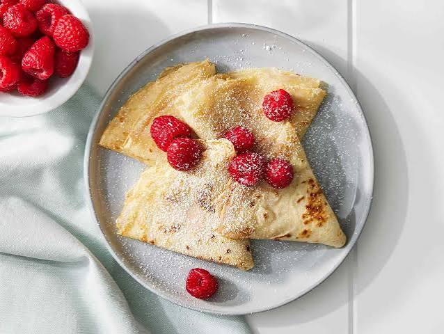

Russian Crepes

Delicate, lacy-edged crepes with a golden color and a soft, buttery finish.
Ingredients:
- 500 ml milk, slightly warm or at room temperature;
- 2-3 eggs (depending on size);
- 200 g all-purpose flour, sifted;
- 1 tbsp sugar;
- 1 pinch salt;
- 1 tbsp vegetable oil, plus a little more for greasing the pan;
- 1 tbsp butter, for brushing the finished blini
Instructions:
- Make the batter. Whisk the eggs with the salt and sugar. Pour in the milk, then add the flour a little at a time, whisking until completely smooth with no lumps.
- Adjust and rest. The batter should be thin enough to make delicate, thin blini. Stir in the vegetable oil and let the batter rest for 15-20 minutes.
- Heat the pan. Heat a skillet well and grease it lightly with oil.
- Pour and swirl. Pour a small amount of batter into the center of the pan and immediately tilt and rotate the pan so the batter spreads evenly over the whole surface.
- Cook. Fry over medium to medium-high heat until golden on both sides. Flip carefully, lifting the edge with a spatula.
- Remove from the frying pan. Stack the finished blini on a plate and brush each one with butter right away to keep the edges soft and tender.
- Serve. Serve with jam, preserves or condensed milk.
The first crepe is always a flop! Keep practicing, and you’ll end up with fantastic crepes!
If you’re interested in recipes for other simple and delicious baked goods from Slavic cuisine, be sure to check out our homepage!